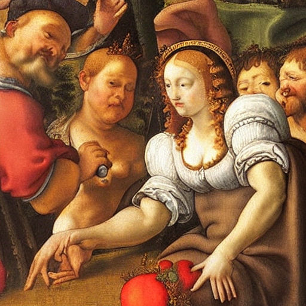

Coq Au Vin

Ingredients
- Olive oil (2tbsp)
- Diced pancetta (4oz)
- Chicken (3-4lb, cut into 8ths)
- Kosher salt
- Fresh ground pepper
- Carrots (1/2 lb, cut in 1" pieces)
- Yellow onion (1)
- Chopped garlic (1tsp)
- Cognac (1/4cup)
- Burgundy wine (1 bottle)
- Chicken stock (1cup)
- Thyme (10 sprigs)
- Unsalted butter (2tbsp)
- All-purpose flour (1 1/2tbsp)
- Small whole onions (1/2lb)
- Cremini mushrooms (1/2lb)
Instructions
- Preheat the oven to 250 degrees F.
- Heat the olive oil in a large Dutch oven. Add the bacon and cook over medium heat for 8 to 10 minutes, until lightly browned. Remove the bacon to a plate with a slotted spoon.
- Meanwhile, lay the chicken out on paper towels and pat dry. Liberally sprinkle the chicken on both sides with salt and pepper. When the bacon is removed, brown the chicken pieces in batches in a single layer for about 5 minutes, turning to brown evenly. Remove the chicken to the plate with the bacon and continue to brown until all the chicken is done. Set aside.
- Add the carrots, onions, 2 teaspoons salt, and 1 teaspoon pepper to the pan and cook over medium heat for 10 to 12 minutes, stirring occasionally, until the onions are lightly browned. Add the garlic and cook for 1 more minute. Add the Cognac and put the bacon, chicken, and any juices that collected on the plate into the pot. Add the wine, chicken stock, and thyme and bring to a simmer. Cover the pot with a tight fitting lid and place in the oven for 30 to 40 minutes, until the chicken is just not pink. Remove from the oven and place on top of the stove.
- Mash 1 tablespoon of butter and the flour together and stir into the stew. Add the frozen onions. In a medium saute pan, add the remaining 1 tablespoon of butter and cook the mushrooms over medium-low heat for 5 to 10 minutes, until browned. Add to the stew. Bring the stew to a simmer and cook for another 10 minutes. Season to taste. Serve hot.
Return to Recipe List